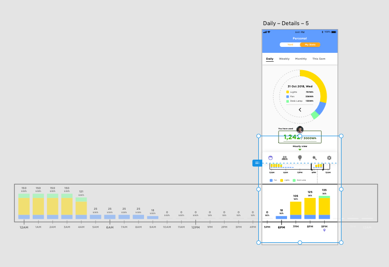
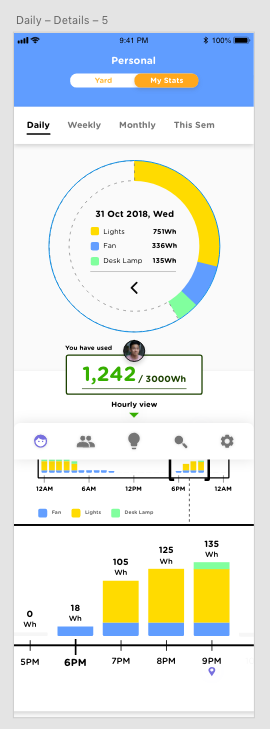
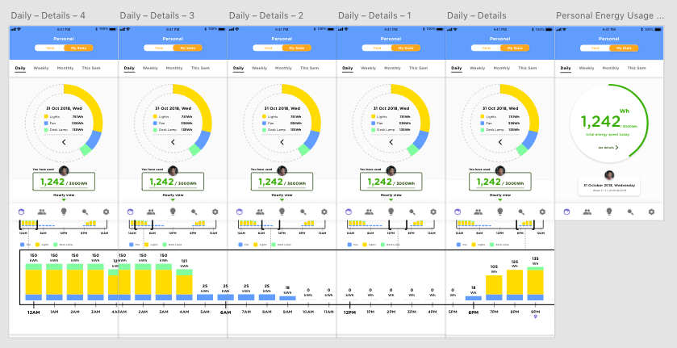
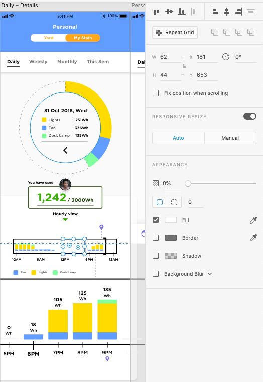
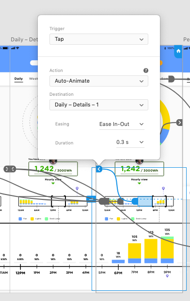

{kind=link}
How to Apply the 12 Principles of UX in Motion in Adobe XD
In this article, I briefly review Issara Willenskomer's 12 Principles of UX in Motion and, using it as a framework, I relook my 2 showcased portfolio pieces to explain why animation is important to consider even at early stages of prototyping, and show that simple animations are possible even for rookie designers to consider, by going through how I've used animation through Adobe XD.
If you've been following my portfolio so far, you should notice that the two highlighted pieces – Gleam and BearBulb - use a lot of animation and transitions between its states. This can be said to be somewhat unusual for prototyping, since inserting animation in between states is time-consuming, difficult to adjust, and arguably, secondary to utility. Indeed, the very ethos of design thinking advocates not only empathy, but agility. Many proponents of design thinking might therefore argue that the heavy use of such animation in prototyping (especially incomplete prototypes such as BearBulb), is a mistake since it is hard to adjust and unimportant at early stages of interface design.
I write this article to argue differently. While I've only been dabbling in user interface and user experience design for a short while, I've seen many portfolios that exhibit a strong use of animation, and I've also experienced how animation can be used by rookies in experience design. Animation captures people. It is hard to argue otherwise. Take these few for example:

"Switching between the data" by Stan Yakysevich for Heartbeat Agency

xore – solar system by Anton Skvortsov

Tabbar Exploration by Vlad Fedoseyev
These are only some great examples of how animation is integral in design. For the three above animations, they not only move the user's attention from one page to another, they inform how the user has moved. Explaining animation, however, requires appropriate vocabulary. For this, I turn to Issara Willenskomer's "UX in Motion Manifesto".

Willenskomer's 12 Principles of UX in Motion
Issara Willenskomer's Manifesto
Early in 2017, Issara Willenskomer, a leading usability expert, wrote an article on Medium attempting to explain how a designer might be able to insert animation and motion to support usability. In it, he identifies that many designers see "UI Animation" as "something that makes the user experience more delightful, but overall doesn't add much value". Willenskomer wants to argue otherwise. In his manifesto, Willenskomer puts forth a movement to advocate UI Animation as an independent, veracious, and important component of UX design, which comprises of 12 Principles.
Now, new players to UI/UX might roll their eyes and dismiss Willenskomer's claims for presuming that animation can be applied by all designers. Indeed, animation might be perceived as too advanced for beginners to consider. This is especially so since animation appears to require a completely different skillset than design. However, I want to show how I, even as a newcomer to interface design, have been able to use Adobe XD to conduct simple but important instances of animation between states. Here, I'm going to refer to some of Willenskomer's principles, and use Gleam and BearBulb as examples of how I've applied these principles even as a newcomer to UI/UX.
(Some of) The 12 Principles
Because this article is about how I've used his principles even as a rookie UI/UX designer, I won't be going through all of his principles. Instead, I'll just cover what's applicable and easy to execute in my weapon of choice: Adobe XD.
Willenskomer organises his principles under 5 categories: Timing, Object Relationship, Object Continuity, Temporal Hierarchy, and Spatial Continuity.

Willenskomer's 12 Principles organised under the 5 Categories
For Gleam and BearBulb, the principles of Parenting, Transformation, Overlay, and Cloning were executed with Adobe XD. For the rest of the article, I'll show how I did this.
Principle 3: Parenting –

Object behavior aligns with user expectations when temporal events occur
The principle of parenting established a parent-child relationship between two objects. In order to execute parenting, the designer must make two objects move in tandem with each other in terms of position and scale.
I applied the principle of parenting to the Hourly view of BearBulb, which you can review here:
Executing this design was simple but specific. First, I had create the entirety of the Hourly view, and insert only the visible part of the design on the artboard. The Hourly view has to be grouped.
Complete view of BearBulb's Hourly View
Only retain the visible part of Hourly view on the artboard, leaving the remaining view to not be visible.
Next, I cloned the same artboard for as many times as was required for the Hourly view to be completely viewed. Since the artboard displays about 5 hours at a go, and since I wanted to display 21 hours worth of time, I had to make 4 of such artboard. For each artboard, I shifted the Hourly view to move to the "next" part, and moved the selector as well. The resulting artboards are as follows:
The Hourly view on many different artboards.
Now to prototype the animations. Since the aim of the interaction is to be able to click on the Selector and then shift the Hourly view, we need to make parts of the selector visible. I do this by adding squares on the selector but making them invisible.
Adding invisible squares on the Selector to allow the user to click on them.
Finally, we switch to Prototype view and link the squares to the various other artboards. The only way to execute animation is to use Adobe XD's "Auto-Animate" feature. This features detects if two artboards
Link the duplicated artboards to each other and ensure that the Action is "Auto-Animate". Easing and duration here are used to specify the speed and method of transitions.
And that's about it! The reason why animation works here is because Adobe XD's "Auto-Animate" function detects if two artboards have the same asset, and adjusts the changes to those two assets between the interaction. Because I've cloned the artboards 4 times, all artboards essentially have the same assets, and only change in terms of where the Hourly view and the Selector are positioned relative to the artboard. So Adobe XD essentially recognises that the Hourly view has moved, and so when transitioning from one artboard to another, it only moves the Hourly view and the Selector, making it seem as though the user is interacting with one screen, when in fact, the user is moving between 4 artboards. Adobe XD is simply shifting the position of the Hourly view asset. The result:
Applying animations via Adobe XD is easy because it only requires the user to 1) Duplicate artboards, or ensure that two artboards have common assets, 2) Link the two artboards appropriately, 3) Adjust the Easing and Duration of the transition. As I've illustrated in this article, applying animation isn't a difficult endeavour, and can be used even in early stages of design. The utility of the 12 Principles extends beyond just Parenting, and even junior designers can apply them, so long as they know how to clone artboards and apply transitions across Adobe XD.
To further prove that these Principles are applicable through Adobe XD, I'll refer to Gleam again. Gleam utilises Principle 4: Transformation, Principle 7: Overlay, and Principle 8: Cloning, in designing interactions for users. Again, the process was merely to clone artboards, move the appropriate assets, and apply tranisitions.

Principle 4: Transformation – Creates a continuous state of narrative flow when object utility changes.

Principle 7: Overlay – Creates narrative and object spatial relationship in visual flatland when layered objects are location dependent.

Principle 8: Cloning – Creates continuity, relationship and narrative, when new objects originate and depart.
With Adobe XD's Auto Transition function, even new players to interaction design can consider the principles of UI Animation in their early prototypes. Willenskomer's principles aren't exclusive to experts who know how to use advanced animation tools like Principle or Adobe After Effects. Animation can, and should be thought of in early stages so that developers will be able to imagine the possibility of executing such actions. With the easiness of Adobe XD, designers of all levels have little excuse to ignore the application of animation in the process of iterative prototyping.